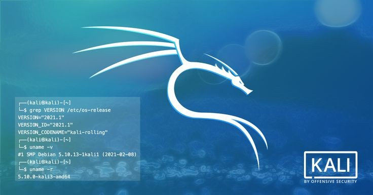

Kali Linux es la versión mejorada y renovada de la distro BackTrack, creada por Offensive Segurity. La distro se basa en Debian, mientras que Backtrack se fijó en Ubuntu para la creación de su programación. Su principal objetivo es poner a disposición del usuario, las mejores herramientas para trabajar la auditoría en internet y contar con un potente sistema de seguridad informática ante los peligros que puedan existir.Muchos hackers encuentran en este distro, el mecanismo perfecto porque a través de las auditorias realizadas en internet encuentran cuales son los puntos débiles de la red. A raíz de esos conocimientos, obtienen el camino para dar comienzo a su ataque a otros sistemas informáticos y redes que se conectan a internet.
